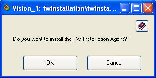

| Panel Name |
fwInstallation_agentInstallation.pnl |
| Introduction | The FW installation agent allows to handle installation requests issued from
a remote PC. The FW installation agent is a control script that will be added to the
PVSS console. This control script must be always running in order be able to execute
requests for installation/uninstallation of FW components from remote systems at any time.
You can always force the installation of the FW Installation Agent at any time from the Advanced Option button of the main panel of the FW Installation Tool. |
